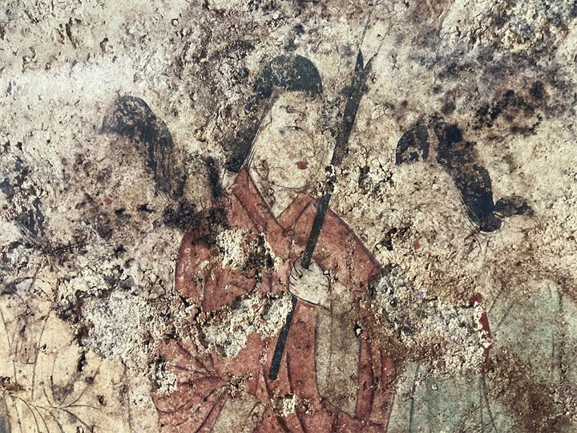
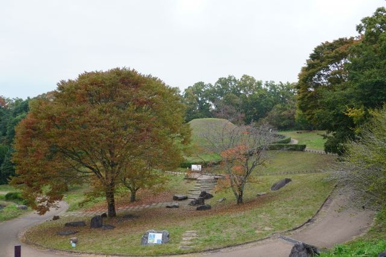

極彩色壁画
「飛鳥美人」と呼ばれる女子群像や四神、星宿図など、飛鳥時代の美しい壁画を見ることができます。

高松塚古墳は、飛鳥時代末期に築造された円墳で、1972年に発見された極彩色壁画で世界的に知られる古墳です。 壁画には「飛鳥美人」と呼ばれる女子群像や四神、星宿図などが描かれており、飛鳥文化を代表する貴重な文化財です。
| 営業時間 | 周辺施設は施設ごとに異なります |
|---|---|
| 定休日 | なし |
| 料金 | 見学無料 |
| 所要時間 | 約30分 |
| 駐車場 | 高松塚周辺地区第1駐車場 （徒歩約3分・無料） |
| アクセス |
近鉄飛鳥駅から徒歩約15分。 レンタサイクルでの観光にも便利な場所にあります。 |
| 地図 | 地図はこちら |

「飛鳥美人」と呼ばれる女子群像や四神、星宿図など、飛鳥時代の美しい壁画を見ることができます。

整備された古墳周辺は、明日香らしい自然を感じながら散策できる場所です。
高松塚古墳は7世紀末から8世紀初頭に築造されたと考えられる古墳です。 1972年の発掘調査で石室内から極彩色壁画が発見され、日本の古代美術を代表する発見として大きな注目を集めました。 被葬者については現在も諸説あり、誰が眠る古墳なのかは明らかになっていません。